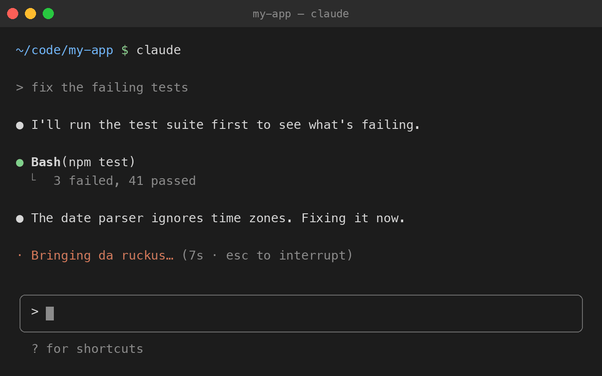

36 Spinners
Wu-Tang Clan spinner words for Claude Code.

While Claude Code works, it shows a word next to the spinner: Jogging…, Pondering…. 36 Spinners swaps those for Wu-Tang Clan song titles and lines: Bombing atomically…, Protecting ya neck…, Feeling like a snail in the ocean…
93 of them, mostly from Enter the Wu-Tang (36 Chambers). See where each one comes from.
install
Paste this into Terminal:
curl -fsSL https://raw.githubusercontent.com/evanroth/wu-tang-spinner/main/install.sh | bash
Then start a new Claude Code session. Sessions already running keep their old words until you restart them.
The installer backs up ~/.claude/settings.json, then adds the words to it. Your other settings stay as they are. It needs jq, which comes with recent versions of macOS (on Linux: sudo apt install jq).
To mix the Wu-Tang words in with Claude's usual ones instead of replacing them:
curl -fsSL https://raw.githubusercontent.com/evanroth/wu-tang-spinner/main/install.sh | bash -s -- --append
update
Run the install command again. It swaps in the latest word list.
curl -fsSL https://raw.githubusercontent.com/evanroth/wu-tang-spinner/main/install.sh | bash
uninstall
Removes the words (after another backup), and Claude goes back to its own.
curl -fsSL https://raw.githubusercontent.com/evanroth/wu-tang-spinner/main/uninstall.sh | bash
- Bringing da ruckus
- Thinking first before you move
- Making way for the merge of traffic
- Just warming up a little bit
- Finding the Tootsie Roll center
- Forming like Voltron
- Dropping science
- The saga continues